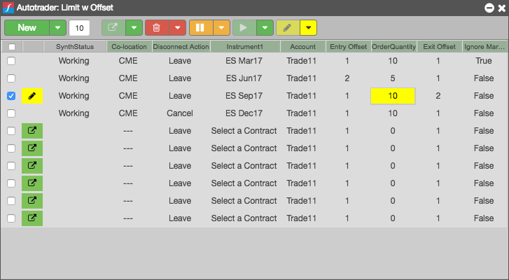
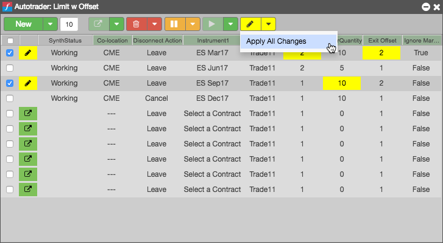

You can modify working algos in Autotrader by changing the values of algo variables in of one or more of the algo rows.
To change a single variable for a working algo:
Verify the SynthStatus of the algo instance is Working.
Click and update the value you want to change; then click .
Note: You cannot change the Instrument, Co-location, Disconnect Action or Ignore Market State values of a working algo order.

To change multiple variables:
Verify the SynthStatus of the algo instance is Working.
Click the values you want to change in one or more algo instances.
Note: You cannot change the instrument, co-location, or ignore market state values of a working algo order.
Click drop-down, and select Apply All Changes.
